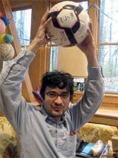

What is the Niko Cup?
Niko Cup is a fundraising soccer tournament organized by the members of a long-standing, local, pick-up soccer league to help defray the medical expenses of one of its members, Niko Harlan.
Who is Niko?
Niko Harlan is a Durham local and an avid soccer player. He was diagnosed with a malignant brain tumor several years back. It had been in remission due to treatment and a bit of luck. This year things changed. Niko had to undergo brain surgery in California on January 14, 2010. After radiation therapy, he hopes to enroll in a clinical study that will provide further treatment and extend his life.
How is Niko doing?
Niko, his brother Kosta and their family keep us posted with intermittent updates on Niko's blog http://anticancer.tumblr.com.
Click here to leave a message for Niko on the Niko Cup Facebook page.
How can I help?
Since the goal of the tournament is to raise as much money towards an estimated $15,000 in Niko's medical expenses, we recommend making one of the three forms of monetary donations:
1) A matching donation pledge. Each player is making a $25 minimum donation to the fundraiser. If you pledge to match the minimum donation of even one of the team members, you;ll be doing a lot. But if you can, a pledge to match the minimum donations of one whole team would be awesome.
2) A donation pledge. You can contact a Niko Cup player to pledge to donate a certain amount of money for every goal scored in one round, by a single team of your choice, or in the whole tournament. Soccer is a relatively low scoring game, but keep in mind that every team will play at least 3 games. Suggested pledges are $10 per goal with a max of ten goals. Thus, if the team scores 20 goals, the pledge is still $100.
3) A direct donation. Of course, you can simply donate a fixed amount toward Niko Cup. All proceeds from the tournament go directly to Niko.
Please note that these donations are *not* tax-deductible as it is through PayPal.
Who do I contact to make a matching donation pledge?
Email Nikocup@gmail.com.
Who do I contact to make a donation pledge?
Email Nikocup@gmail.com.
How can I make a direct donation?
Please note that these donations are *not* tax-deductible as it is through PayPal.
How many teams are there? How many players are participating?
There are 48 players, 8 teams of 6 players competing in a round robin. Each team will have the opportunity to play 3 games in the first round. There will be a semi-final round followed by a final round.
How long are the games? When will the tournament be over?
Each game will last 20 minutes. The final round should be over by noon.
Who are the players?
The players consist of soccer enthusiasts (and converts) who meet regularly at fields around Durham to play pick-up games. Many of the players have been organizing and participating in this friendly league for over ten years. They are your friends and neighbors trying to do something special.
When will scores be posted?
Final results will be posted right after the event is completed on Feb 21st.
When/where are the games?
The tournament will start at 8:30 AM on February 21, 2010. The games are to be played at the West Campus turf fields at Duke University. You can see a map to the fields on the tournament page. Feel free to come and watch but attending is not as important as making a pledge of support.
NIKO HARLAN

Get your Niko Cup T-Shirt today!
All profits go to benefit Niko Harlan's cancer fight